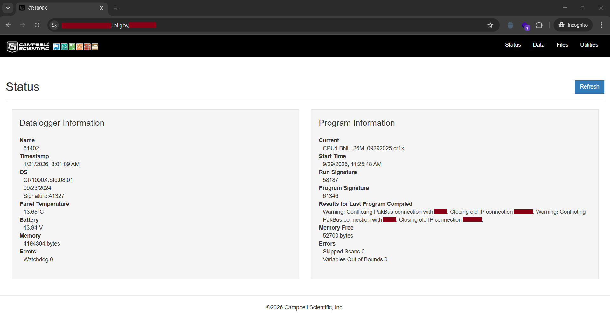
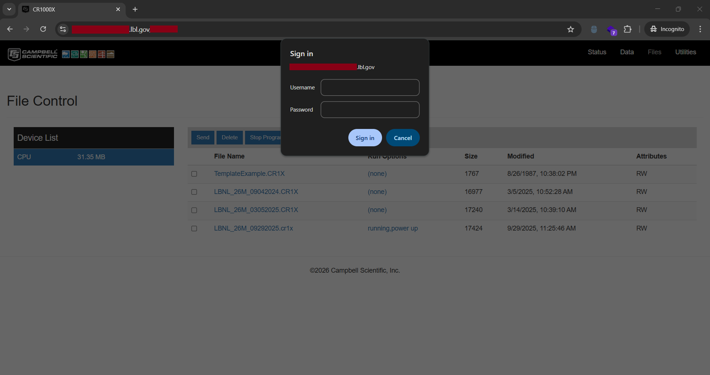
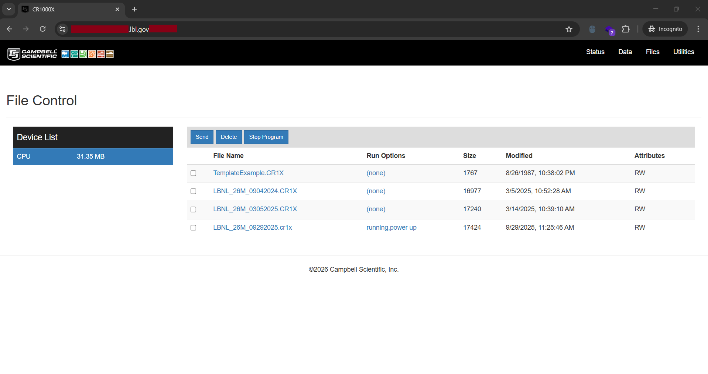
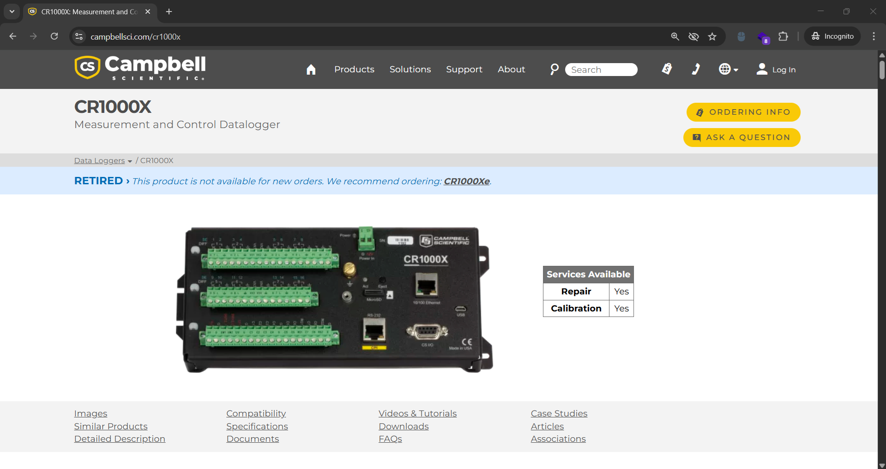
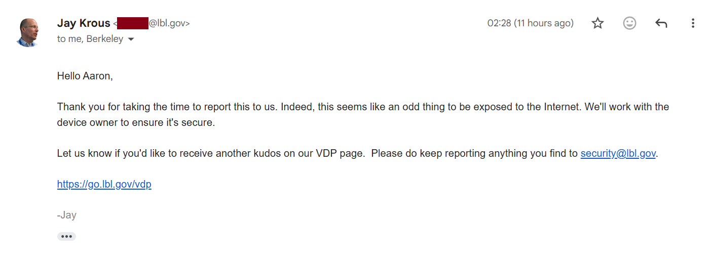

Berkeley Lab's Exposed CR1000X Data Logger
Lawrence Berkeley National Laboratory (LBNL)
As I am writing this on 22 January 2026 at 12:08 PM, I discovered something that I personally find mind-blowing for us cybersecurity folks. Curious to know what it is? That will come later at the end of this blog.
For now, back to the main topic. This blog is a write-up of my successful attempt to discover my third officially valid vulnerability (and hopefully a fourth in the future) for Lawrence Berkeley National Laboratory’s (LBNL) Vulnerability Disclosure Program.
About two weeks ago, I realised that my existing methodology for enumerating subdomains and discovering hidden attack surfaces was suboptimal. Because of that, I decided to try a newer and more effective recon tool created by Bhagirath Saxena (rix4uni). I’ve already dropped the biggest hint by mentioning the tool creator and his GitHub, but I won’t name the tool directly. I prefer readers to self-discover it, as I strongly believe people learn best when they put in their own effort.
Using this recon tool on Kali Linux, I enumerated a large set of subdomains, stored them in a text file, and manually opened them one by one to inspect the responses. Many ethical hackers would immediately pipe results into tools like httpx, Nuclei, or similar automation. While those tools are extremely powerful, I personally get better results through manual inspection. My belief is simple: Tools focus heavily on status codes and signatures, but when you manually and visually inspect subdomains, combined with intuition and experience, you often notice things that automation misses.
After a lengthy session of bookmarking multiple interesting targets, I went through each bookmarked URL, testing for misconfigurations, XSS, and other common vulnerabilities. Eventually, I landed on a particularly interesting page.
My first thought was information disclosure. However, for this type of vulnerability to be valid, it typically needs to expose sensitive data such as Personally Identifiable Information (PII), credentials, internal server or system configuration details. In this case, the page only displayed system status information. While not highly sensitive, it could still help an attacker understand the system’s configuration and operational state. I initially assumed this would not be impactful enough and would likely result in an invalid submission.
While reviewing the page, I noticed I was currently on the Status tab. There were other tabs available as well: Data, Files, and Utilities. I clicked on Files, and a Sign-In prompt immediately appeared.
I tested common default credential pairs like admin:admin, admin:password, and any other possible credential pairs that I could think of. None of them worked. At that point, I clicked Cancel, assuming the attempt was over.
To my surprise, I was not redirected to an HTTP 401 Unauthorized page. Instead, the File Control page remained fully accessible. This immediately triggered my curiosity. I repeated the same process for the Data and Utilities tabs, and observed the exact same behaviour.
The Data tab did not expose anything particularly interesting. However, the Utilities tab was a different story. It displayed functionality that appeared capable of modifying device settings. At this point, my unverified but reasonable assumption was that the authentication prompt was merely cosmetic, and that proper access control was not being enforced on the backend. In other words, an attacker could simply dismiss the login prompt and still gain access to potentially sensitive device functionality.

To better understand the real-world impact of this exposure, I researched what the CR1000X actually is. The following information and images are taken from Campbell Scientific’s official website.

Now this is interesting, the CR1000X is a rugged, high-precision data logger designed for extreme environments. It is capable of operating for years on a single battery, often paired with a solar panel. At that moment, I was genuinely relieved that I did not attempt to alter any settings to demonstrate impact. Doing so could have disrupted critical research operations and potentially affected real people’s careers.
I sent a detailed and responsible report to the Berkeley Lab Cybersecurity Team. A few hours later, I received a reply from Jay Krous. At the time, I did not realise who he was. Later, out of curiosity, I Googled his name, only to discover that he is the Head of Cybersecurity at Berkeley Lab.
While Googling Jay Krous, I noticed another search result titled: 'How Berkeley Lab Helped Develop One of the World's Most ...' so naturally I clicked on it.

Berkeley Lab played a key role in developing Zeek. Yes, that Zeek. Zeek is a powerful network analysis framework widely used for security monitoring and network traffic analysis. If you’ve ever used educational platforms like TryHackMe, chances are you’ve encountered Zeek at some point.
Realising that I had responsibly disclosed a vulnerability to the same institution that helped create one of the most influential tools in modern network security was genuinely mind-blowing.
After Berkeley Lab Cybersecurity acknowledged my contribution in the White Hats for Science Kudos section, this blog is finally published on 24 January 2026.
See you in the next hack.
— @aaronamran
January 2026